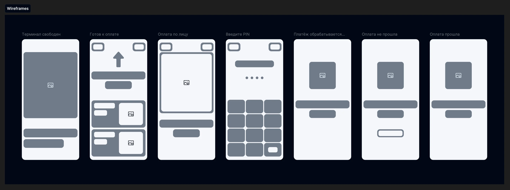
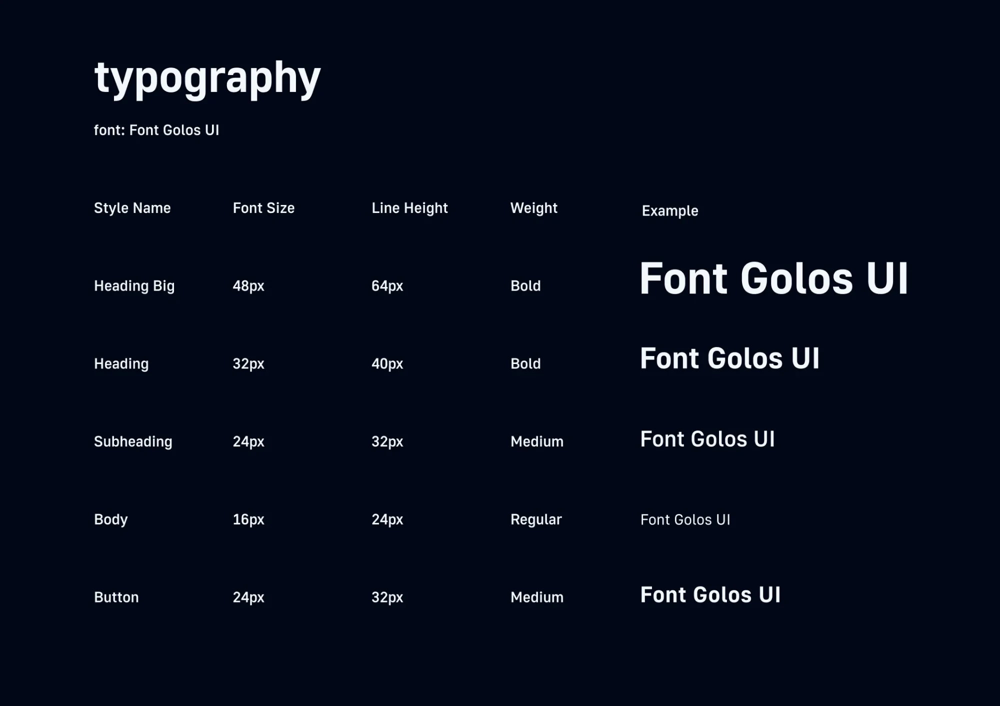
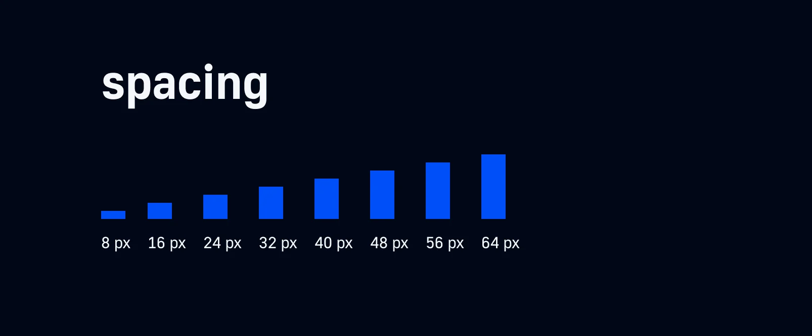
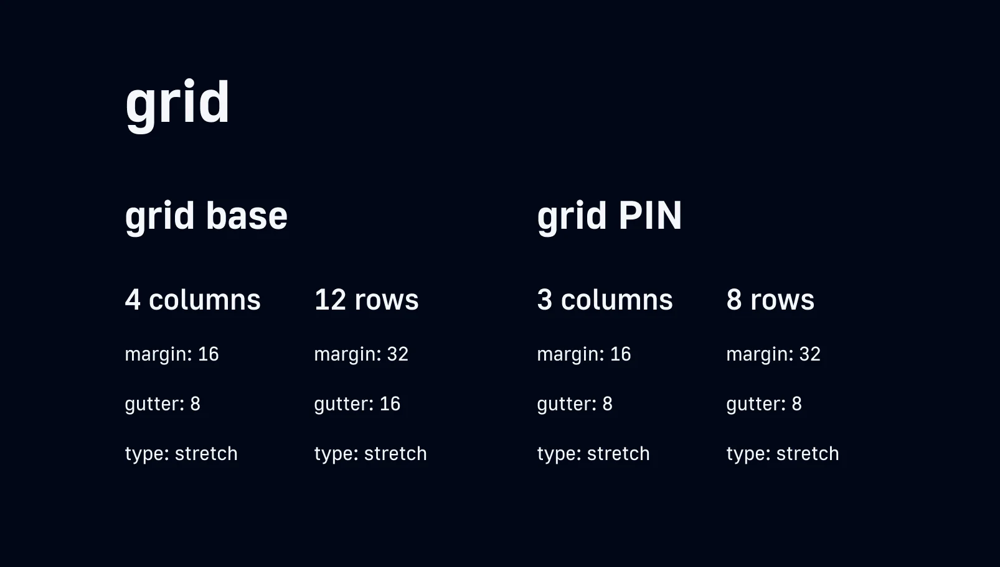
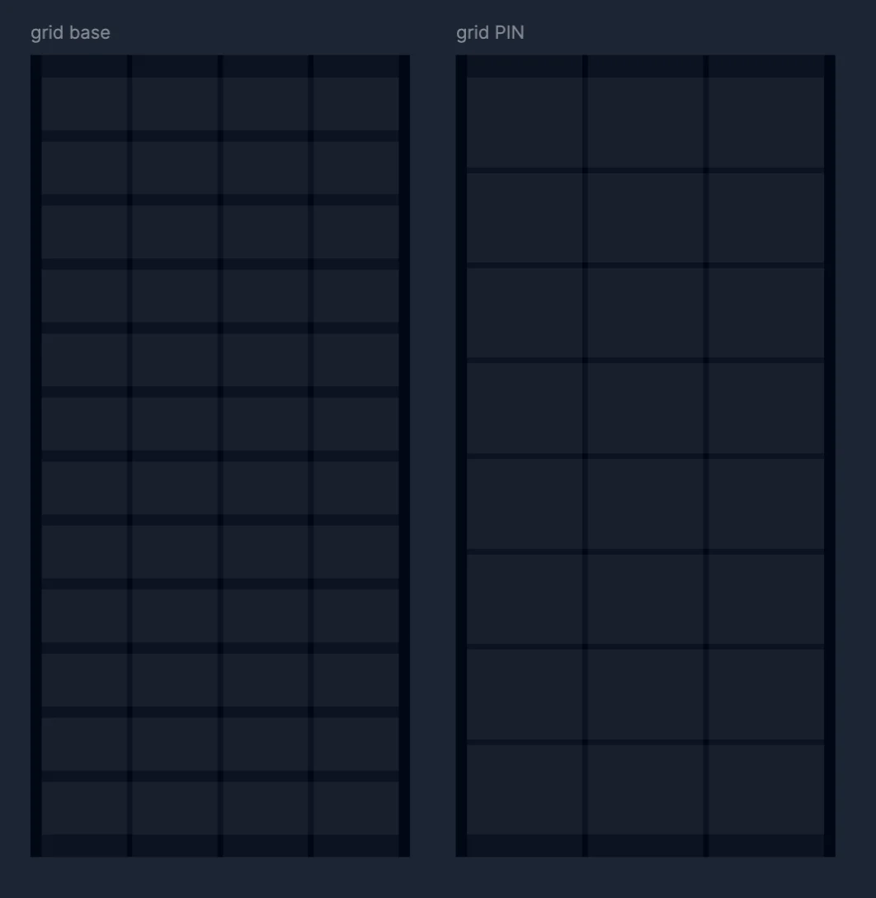
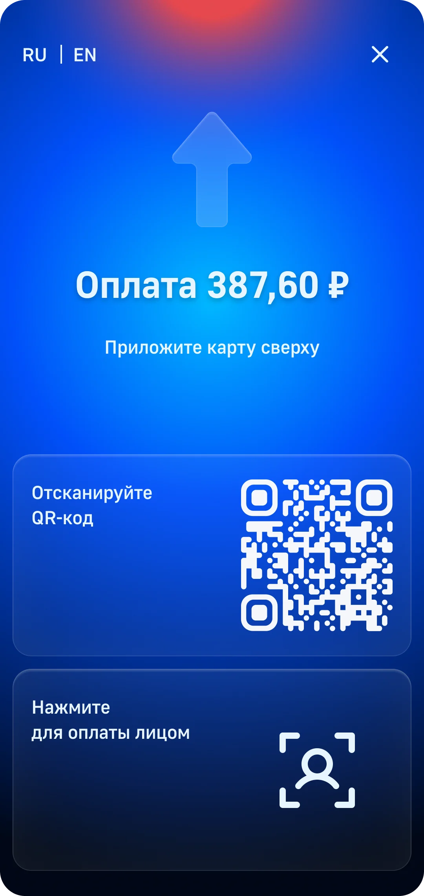
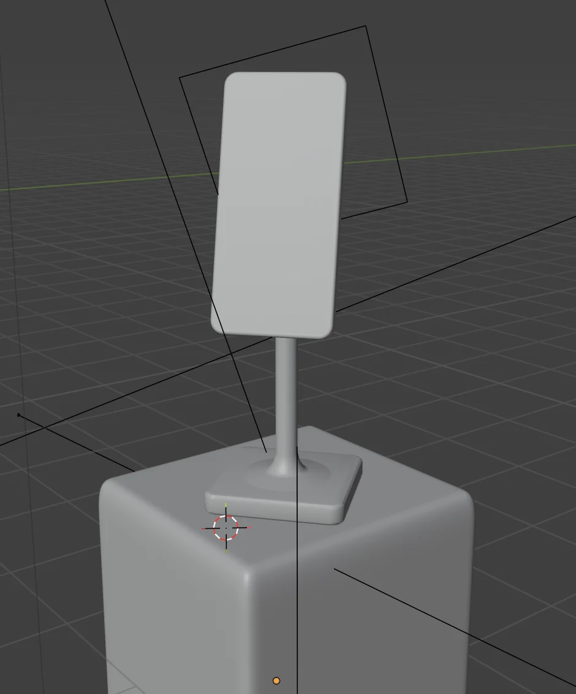

Время
Очередь за спиной и ожидание мгновенной реакции.
Product design · ВТБ · 2025
Концепция интерфейса терминала нового поколения: разные способы оплаты, один понятный сценарий.

Задача и результат
Я спроектировала интерфейс для вертикального сенсорного терминала, который поддерживает карту, NFC, QR через СБП и биометрию. Главный фокус — быстрый сценарий, ясные статусы и понятные действия для людей с разным уровнем цифровой грамотности.

Что получилось
Это концепт: количественные результаты требуют тестирования на реальном устройстве.
Контекст
Оплата происходит в шумном магазине, часто в спешке и с занятыми руками. Если терминал не показывает, что операция началась, человек повторно прикладывает карту или обращается к кассиру.
Очередь за спиной и ожидание мгновенной реакции.
Шум, плохой свет, верхняя одежда и нестабильные условия для камеры.
Вертикальный сенсорный экран, управление пальцами и NFC-зона сверху.
Возможные задержки эквайринга, СБП и банковского приложения.
Крупный текст, RU/EN и статусы, которые не зависят только от цвета.
Критерии успеха
Если запускать продукт, я бы проверяла решение по четырём показателям:
Среднее время оплаты
Успешные оплаты с первой попытки
Обращения к кассиру за подсказкой
Использование NFC, QR и биометрии
Исследование
Провела кабинетный анализ актуальных терминалов российского рынка, изучила привычные сценарии и выделила четыре группы пользователей. Это помогло сформулировать ограничения и гипотезы до перехода к макетам.
Привычны и просты, но маленький экран не позволяет объяснять новые способы оплаты и ошибки человеческим языком.
Дают пространство для крупных подсказок, разных сценариев и понятной обратной связи, но рискуют стать перегруженными.
Всем нужен быстрый результат, но причины ошибок и уровень уверенности различаются.
Платят телефоном или часами. Ждут мгновенного отклика и минимум шагов.
«Хочу сразу видеть, что оплата началась»
Платят в спешке. Ценят предсказуемость и уверенность, что списание не повторится.
«Хочу понимать статус на каждом шаге»
Чаще выбирают карту. Нуждаются в крупном тексте, спокойном темпе и простых формулировках.
«Хочу не бояться нажать не туда»
Ориентируются по универсальным иконкам и ожидают английский интерфейс.
«Хочу понять результат без русского языка»
Проблемы и гипотезы
Каждую проблему перевела в проверяемый принцип будущего интерфейса.
Гипотеза: один главный способ оплаты и подсветка NFC-зоны снизят число лишних действий.
Гипотеза: принцип «один экран — одно действие» сократит сценарий.
Гипотеза: короткое пояснение и кнопка повтора помогут завершить больше операций.
Гипотеза: крупный контрастный текст, иконка, звук и RU/EN сделают сценарий понятнее.
UX-структура
Все способы оплаты начинаются на экране «Готов к оплате» и сходятся в общие состояния обработки, успеха или ошибки.
Массовый сценарий для карты, телефона, часов и платёжного стикера.
Пользователь сканирует код и завершает оплату на телефоне.
Камера помогает провести оплату без карты или телефона.
Ошибка возвращает пользователя в сценарий, а не оставляет в тупике.

Сначала проверила логику и иерархию, затем перешла к визуальному стилю.

Ключевые решения
Без лишних подтверждений и промежуточных выборов.
На первом экране уже есть NFC, QR и биометрия.
После четвёртой цифры код отправляется автоматически.
Понятная причина и явное действие «Повторить».
Текст, форма, 3D-иконка и звуковая обратная связь.
Подсветка и стрелка показывают, куда приложить карту.
Визуальная система
Для интерфейса выбрала тёмный синий градиент, белый текст, стеклянные поверхности и пластиковые 3D-объекты. Такая система сохраняет контраст и делает ключевой статус заметным.

Декоративные эффекты не конкурируют с действием: главный текст и статус всегда остаются в центре внимания.



Шаг системы отступов
Основная сетка экрана
Учтены камера и скругления корпуса



Финальные экраны
Пользователь в каждый момент понимает: что происходит сейчас, что нужно сделать и чем завершилась операция.
Сумма и основной способ оплаты находятся в первом фокусе. QR и биометрия доступны на том же экране, без отдельного меню.



Обратная связь


3D и визуализация
Чтобы проверить интерфейс в контексте реального объекта, я смоделировала терминал и набор статусных иконок в Blender.

Итоги
Кейс помог пройти полный путь от продуктовой постановки до визуализации интерфейса в реальном устройстве.
Карта состояний покрывает основной и альтернативные способы оплаты, PIN, ожидание, успех и ошибку.
Компоненты, стили, сетки и правила позволяют добавлять новые способы оплаты без перестройки сценария.
3D-модель показала, как экран, камера и NFC-зона работают как одно устройство.